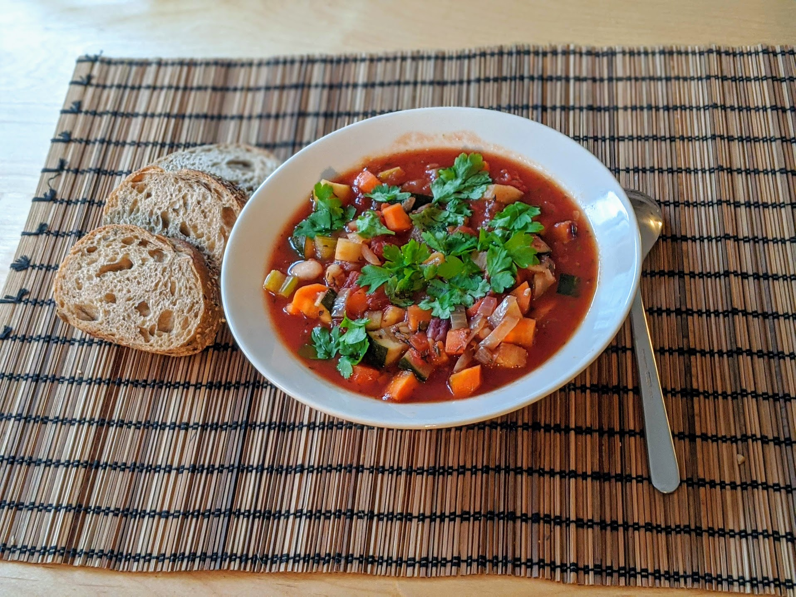

Minestrone

Pour 6 personnes :
- Un cube de bouillon
- Une grosse boîte de tomates concassées (ou deux de taille standard)
- Une grosse boîte de haricots blancs (ou deux de taille standard)
- Une boîte de haricots verts
- Une courgette
- Deux branches de céleri
- Deux gros oignons
- Trois gousses d'ail
- Trois carottes
- (Facultatif) 300g de petites pâtes
- Une bonne cuillère à café de thym
- Une bonne cuillère à café d'origan
- Deux feuilles de laurier
- Une petite botte de persil frais
- Sel, poivre, huile d'olive
- Éplucher et émincer les oignons et l'ail, et les faire fondre au fond d'une cocotte, dans une quantité généreuse d'huile d'olive.
- Laver et couper tous les légumes en petits bouts. Ajouter tous les ingrédients, à part le persil et les pâtes, avec un bon litre d'eau bouillante. Laisser mijoter à feu doux pendant deux ou trois heures, ou dans une mijoteuse sur réglage doux pendant 6-8 heures.
- Faire cuire les pâtes à part à la fin de la cuisson, les mélanger avec le minestrone juste avant de servir.
Remarque : pas mal d'ingrédients sont facultatifs (haricots, courgettes, céleri…), et on peut rajouter d'autres légumes si on a envie. On peut aussi rajouter du parmesan à la fin.
Retour à la liste des recettes